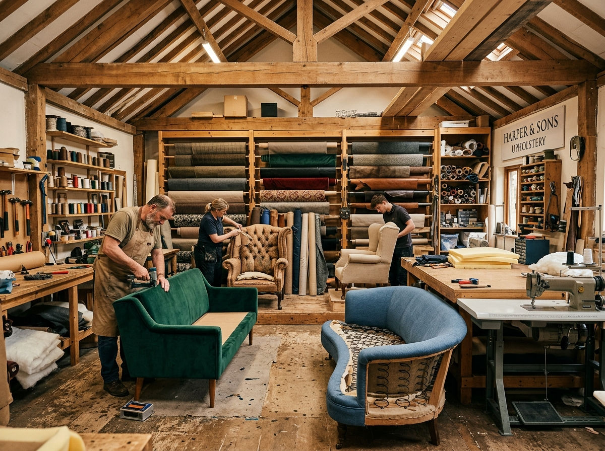
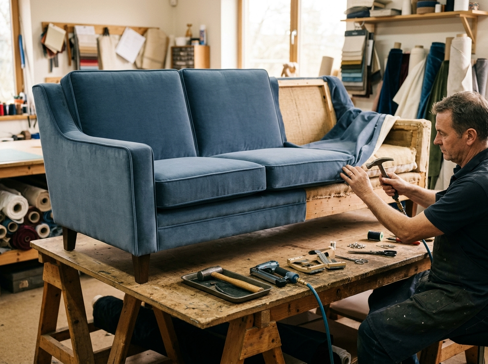
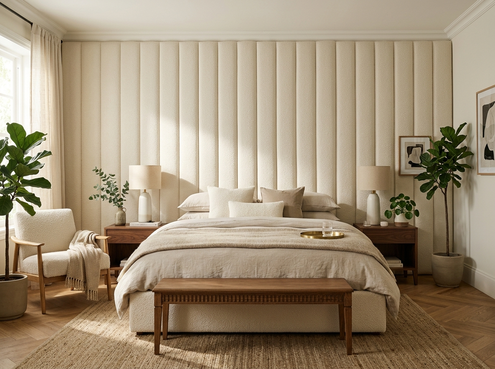

Ottoman & Bench
Storage ottomans, coffee table ottomans, and upholstered benches — functional elegance at its finest.
Get Quote
From antique restoration to bespoke custom creations — every service delivered with the same uncompromising attention to detail that has defined ReVox for over 25 years.


Your sofa is the centrepiece of your living space. Our sofa reupholstery service involves complete disassembly, frame inspection and repair, re-webbing, high-density foam replacement, and expert fabric application — all performed by master craftsmen.
Whether it is a prized wingback, a beloved reading chair, or a set of dining chairs — our artisans restore each one to pristine condition. We pay particular attention to the precise fit of pattern repeats and the comfort of seating profiles.





A stunning headboard defines the entire bedroom. We build custom MDF frames to your exact dimensions and upholster them in your chosen fabric with options for button tufting, channel quilting, curved profiles, and nailhead detailing.
Beyond the classics, our workshop handles the full spectrum of upholstery needs for homes, businesses, and bespoke projects.
Storage ottomans, coffee table ottomans, and upholstered benches — functional elegance at its finest.
Get Quote
Matching upholstery for sets of dining chairs with precision pattern alignment across every seat.
Get Quote
Weather-resistant fabrics for patio furniture, boat seating, and poolside cushions built to withstand the elements.
Get Quote
Bulk upholstery for hotels, restaurants, offices, and event venues. Custom fabric sourcing and project management included.
Get QuoteFrom your first enquiry to the moment your furniture is delivered back, here is the journey every ReVox project takes.
Contact us via our form, phone, or by visiting the showroom. Describe your piece, share photos, and tell us your vision.
A master artisan meets you to assess the piece, recommend structural repairs, and guide you through fabric selection from 500+ options.
We collect your furniture and begin the transformation. Progress photos are shared with you at key milestones throughout the process.
Your beautifully transformed piece is delivered and positioned. We do not leave until you are completely delighted with the result.
Honest, itemised pricing with no hidden costs. Fabric and structural repair costs are quoted separately for full transparency.
All prices are indicative starting points. Your exact quote will be provided after consultation. Fabric costs are quoted separately. Payment placeholder: Stripe / PayPal integration available for deposits.
Everything you need to know before booking your upholstery service.
A standard 3-seater sofa typically takes 7–10 working days from collection. More complex pieces involving tufting, antique restoration, or structural repair may take 2–3 weeks. We always confirm the timeline before beginning work.
No — we offer complimentary pick-up and delivery within Chennai. Our team will collect your piece, transport it safely to our workshop, and return it once complete. For outstation projects, we can arrange courier at an additional cost.
Yes, we welcome customer-supplied fabric. We recommend sharing a sample with us first so we can confirm suitability (weight, weave, and durability) for upholstery use. Some delicate fabrics may require additional interlining for longevity.
In most cases, yes. Reupholstering a quality sofa typically costs 40–60% of the price of an equivalent new piece, while preserving the superior solid hardwood frame and spring system of older furniture — which is often of far higher quality than modern mass-produced alternatives.
Absolutely. We inspect every frame and spring system before beginning upholstery. Any necessary repairs — from broken coil springs to loose joints, cracked frames, or worn webbing — are carried out by our specialists. All structural repair work is quoted separately and transparently.
We accept a 50% deposit on project confirmation, with the balance due on delivery. Online payment via Stripe and PayPal is available (integration placeholder active). We also accept bank transfer, UPI, and cash at our workshop.